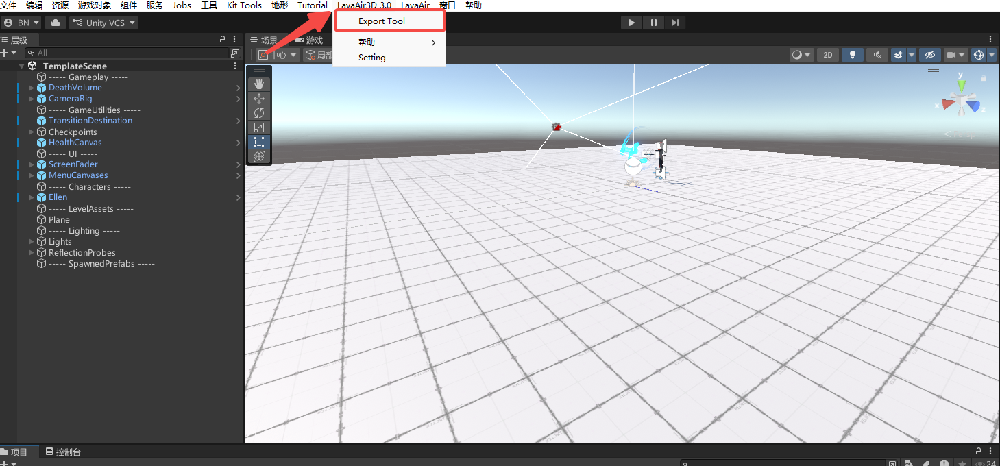
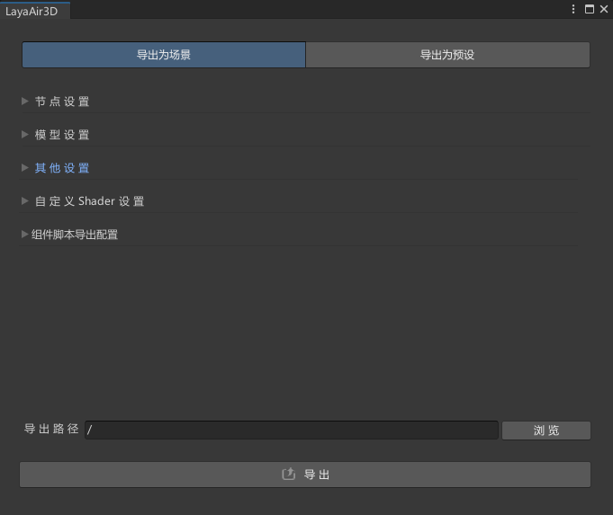
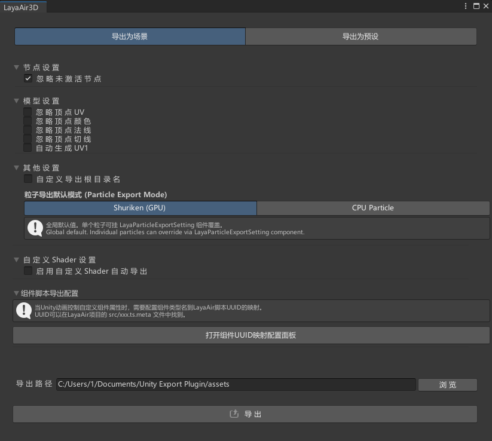
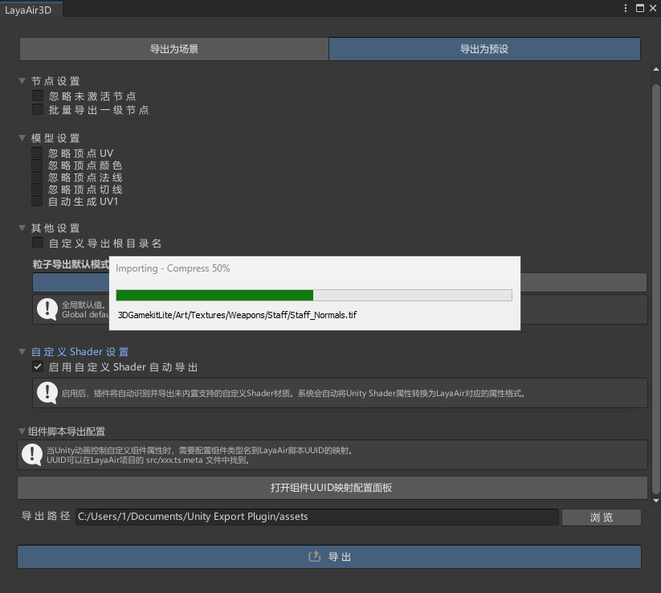
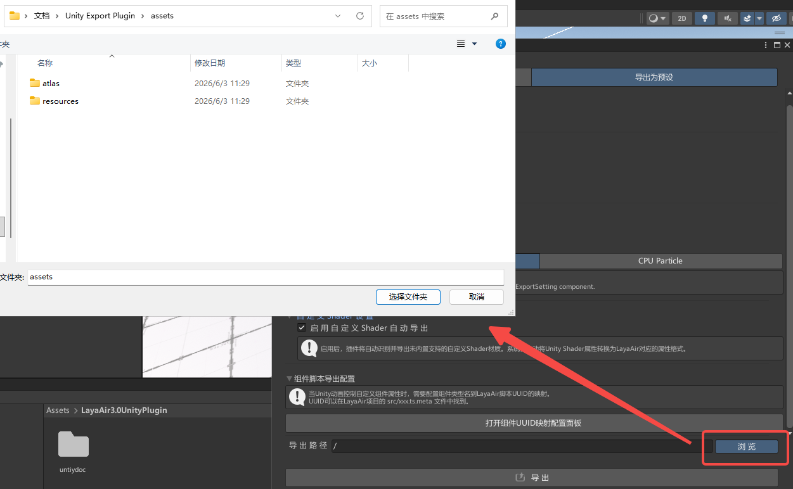
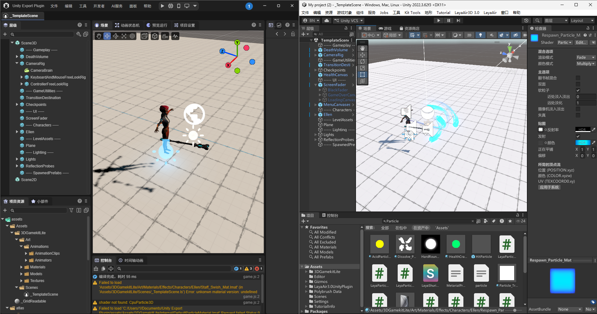
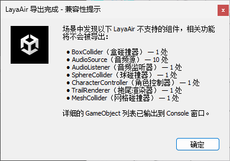

核心原理 · 导出主链路

LayaAir3D 3.0 / Export Tool 打开导出窗口；左侧 Hierarchy 即待导出的场景层级，场景视图为 3D Game Kit Lite 关卡。本节给出整条流水线的全景：从点下「导出」到文件落盘，插件依次走过六个阶段。本节先建立从入口到产物的整体脉络，②③④ 再分别展开其中的关键环节。六个阶段依次为——入口与配置 → 多场景循环 → 层级收集（展开为节点列表）→ 节点映射与建树 → 组件分发 → 落盘。
LayaAir3D.OnGUI → ExportScene()LayaAir3D 3.0 / Export Tool）顶部切「导出为场景 / 导出为预设」，下含
节点设置 / 模型设置 / 其他设置 / 自定义 Shader 设置 / 组件脚本导出配置 五个折叠区与保存路径。
点导出按钮 → LayaAir3Export.ExportScene()。
ExportScene()GameObjectUitls / MetarialUitls / AnimationCurveGroup /
UnsupportedFeatureCollector，并清空自定义 Shader 缓存），再遍历当前所有已打开场景。
仅导出已保存的场景：路径为空（未保存）的场景不在导出范围内。每个场景构造一个
HierarchyFile 并调用 saveAllFile()。
HierarchyFile 构造Canvas 的对象及其整棵子树（UI 2D 暂未启用）。随后建立总资源表 ResoureMap，
并为每个对象登记进 NodeMap。
NodeMap → ResoureMap.createNodeTree()_$id（#0=Scene2D、#1=Scene3D 预留，业务节点从 #2 起）。
场景模式直接导出实例内容；预制体模式则检测预制体实例根、写 _$prefab 引用。
之后按父子关系挂成 _$child 树，并逐节点调 writeCompoent() 写组件。
（_$ 前缀是 LayaAir 场景 / 预制体文件的字段约定，下文 _$type / _$comp 等同理。）
ResoureMap.writeComponentData()saveAllFile() → ResoureMap.SaveAllFile()Scene2D → Scene3D 根（写入天空盒 / 环境光 / 球谐 / 雾），输出 .ls；
预设模式把每个根节点输出为 .lh（开启「批量导出一级节点」时按一级子节点拆分）。
最后迭代保存所有登记文件——保存中可能动态产生新文件（如动画又引用了材质），用「已处理集合 + 循环」确保不漏。
完成后弹出不支持功能汇总对话框。




assets 目录——其中的 atlas、resources 等文件夹是 LayaAir 引擎工程自带的结构，并非本次导出生成。本节展开 ① 中的组件分发阶段：插件逐个检查节点上的组件，按类型交给对应导出器，各自产出对应文件。下表枚举每种 Unity 组件、其对应的 LayaAir 产物，以及对应的细化页——这也是后续各页（网格 / 材质 / 动画…）所深入说明的分发链。
| Unity 组件 | LayaAir 产物 | 说明 / 详情 |
|---|---|---|
| Camera * | Camera 节点（_$type） | 投影、FOV、裁剪面、清屏色；相机有额外 Y180 朝向补偿（见 ③） |
| MeshFilter + MeshRenderer | .lm 网格 + .lmat 材质 | 网格导出 · 材质 / Shader |
| SkinnedMeshRenderer | 网格 + 骨骼引用 + 包围盒 | 骨骼按节点引用，localBounds 中心 X 取反 · 网格导出 |
| Light | 方向光 / 点光 / 聚光 | 按类型分流，写颜色 / 强度 / 范围等；与相机同样有额外 Y180 朝向补偿（见 ③） |
| Animator | .lani + 状态机 | 曲线绑定按类型分发；纯 SpriteRenderer 颜色动画转 2D · 动画导出 |
| ReflectionProbe / LODGroup | 反射探针 / LOD | 包围盒经矩阵变换；LOD 各级按节点引用 |
| ParticleSystem | GPU(Shuriken) 或 CPU 粒子 | 按模式分两条路；启用 Trails/Noise 等会自动转 CPU · 粒子导出 |
| ParticleSystemForceField | 力场 | 仅在 CPU 粒子模式下有意义 · 粒子导出 |
| SpriteRenderer | UI3D + 2D 预制体 + 图集 | 整图直引 / 子区域出 .atlas；颜色动画出 .mcc · 2D 精灵导出 |
| 自定义 MonoBehaviour | 脚本组件 + 序列化属性 | 仅在配置了 UUID 映射时导出，否则不导出；只搬属性值，不转逻辑代码 |
writeComponentData 的组件分发链，而是在上一层
getComponentsData 里就被单独识别——挂了 Camera 的对象直接把节点 _$type 标成
Camera（其余对象标为 Sprite3D），相机参数随节点本体写出，而非作为 _$comp 里的一个组件项。
表中其余各行才是真正经 writeComponentData 按组件类型分流的。
本节说明贯穿全程的坐标系转换：Unity 为左手系、LayaAir 为右手系，分发链的每条导出路径在写出空间数据前都需先对齐坐标。两个引擎手性相反，插件统一以沿 X 轴翻转处理，相应逻辑分布于各导出路径中，汇总如下：
| 对象 | 处理方式 |
|---|---|
| 网格顶点 | 顶点位置 X 分量取反（导出时逐顶点翻转，详见网格导出） |
| SpriteRenderer 节点 | 没有导出网格可翻转，改为在节点 transform.localScale.x 取反补偿 |
| SkinnedMeshRenderer 包围盒 | localBounds 中心 X 取反后重算 min / max |
| 相机 / 灯光 | 本体施加额外 Y180 旋转；其子节点改用「取反 Z」而非取反 X，并左乘 Y180 补偿父级 |
| 反射探针包围盒 | 顶点经 worldToLocalMatrix 变换到局部空间 |
本节列出整条链路落盘产出的文件类型：分发链处理完各类组件后，所有数据写入下列文件。每种产物对应一类资源——场景、节点、网格、材质、动画、贴图等，构成最终交付 LayaAir 工程的导出结果。
| 扩展名 / 目录 | 内容 |
|---|---|
.ls | 场景文件（Scene2D → Scene3D 根，含天空盒 / 环境光 / 球谐 / 雾） |
.lh | 节点 / 预制体（导出为预设模式；可按一级节点批量拆分） |
.lm | 网格（顶点流 / 子网格范围 / 骨骼绑定） |
.lmat | 材质（贴图 / 颜色 / 浮点参数 / 渲染状态） |
.lani | 动画片段（骨骼 / 属性曲线） |
.atlas + 贴图 | 2D 图集（SpriteRenderer 子区域） |
.mcc | 2D 动画控制器（SpriteRenderer 颜色动画） |
贴图 .png/.jpg/.hdr | 纹理（按是否含 Alpha / HDR 决定格式） |
_src_/ 运行时脚本 | 内置注入的 TS（目前仅 Animator2DSync.ts） |
本节以真实场景验证前四节的整条链路导出结果。以 3D Game Kit Lite 的示例场景实测：导出后将产物导入 LayaAir 3.x，场景层级、角色网格、材质贴图、灯光、骨骼等核心美术资源 均忠实还原并正常渲染——这部分正是分发链里有明确分支的组件。


UnsupportedFeatureCollector），列出场景中不支持、不会被导出的组件——碰撞器、AudioSource、CharacterController、TrailRenderer 等，详细 GameObject 列表同步输出到 Console。